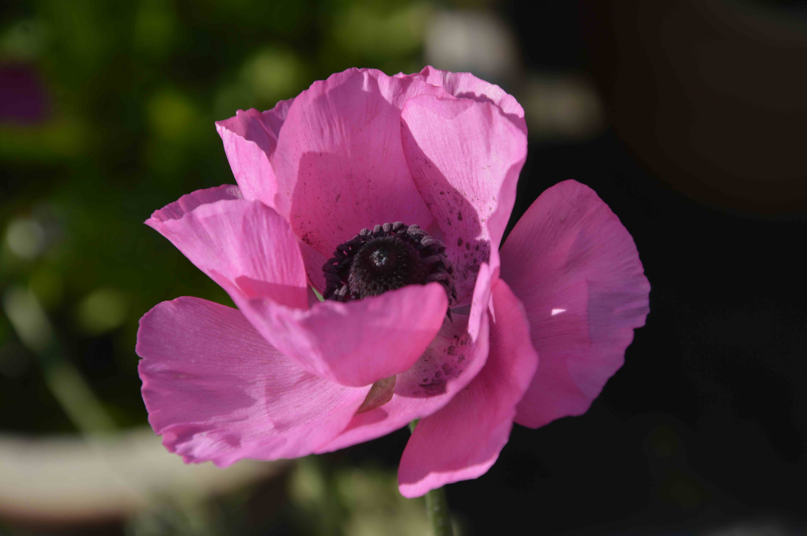
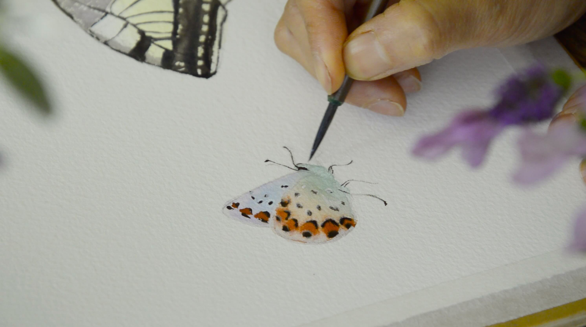

Find beauty in
everyday life.
You don’t need more time to find happiness. Sometimes, you just need to notice the little moments.
Choose how you feel and get one small activity for a little peace today.
Get one calm idea today ↗A gentle corner of Zen Beautiful

and notice
You don’t need to do more.
Just be here, for a moment.
Choose what you need today. There’s no perfect way to begin, and no pressure to keep up.
Daily Calm
Choose how you feel and get one gentle activity to help you find a little peace today.
Get today’s suggestion ↗ 02Creative Reset
Try a five-minute drawing or watercolor prompt, with no need to get it perfect.
Find a little prompt ↗ 03Gratitude Journal
Notice what made you smile, what you appreciate and what you can let go of.
Write today’s reflections ↗A little peace,
for right now.
Choose how today feels and get one small activity to help you pause, reconnect or soften your day.
Start with one slow breath.
Choose how you feel and we’ll find a gentle place to begin.
softly
There is time
for this breath.

no rulesno wrong turns
Feel creative again,
in five minutes.
Choose a tiny drawing or beginner watercolor activity to pause, play and reconnect with your creativity. No experience or perfect result needed.
Explore all 30 five-minute prompts ↗Draw a tiny garden using only circles and lines. Let it grow in any direction.
Paper, a pen, a paintbrush—or just your imagination. That’s plenty.
Notice what matters,
one day at a time.
Take a few quiet minutes for three small reflections: what made you smile, what you appreciate, and what you can let go of. Keep a little something from each day for 30 days.
Start the 30-day journal ↗Little moments can make
a big difference.